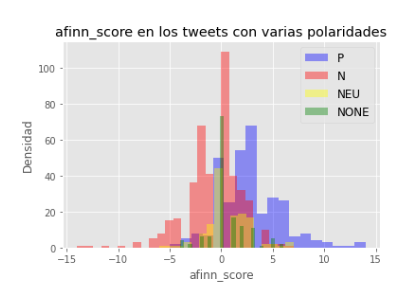
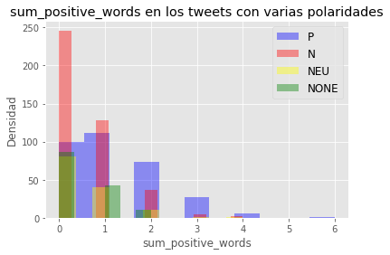

Tweet Sentiment Analysis
Determining a text document sentiment is becoming an essential tool for both public and private companies, since it brings useful insights to find out the opinions of a general population on any topic. Therefore, it is great support for decision-making processes.
Sentiment analysis has traditionally been approached as a classification task in which two major problems need to be addressed. Firstly, the text should be transformed into a suitable representation. This is known as text modelling. Secondly, the classification algorithm should be selected. Thus, this project implements a Spanish Sentiment Analysis of Tweets starting with text transformations (lemmatization, derivation, entity elimination, etc.), and tokenizers. Furthermore, resources such as the Affin lexicon and the polarity dictionary for Spanish are used.

The experiments show that the tweets in Spanish can be classified according to the index (the positive value, negative, neutral and emotionless tweets) achieving results comparable to the state of the art. Considering all implemented ML models, the SVM performs best and seems to be more suitable for this type of problem.

Counterintuitively, it is observed that the complexity of the techniques used in the preprocessing step does not correlate with the final performance of the classifier. For example, a classifier that uses lemmatization, which is one of the preprocessing techniques that has the most complexity, may not be one of the systems that has the better performance.
This project forms a part of a curse given in Polytechnic University of Valencia.